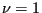

Next: Stationary laminar inviscid compressible Up: Simple example problems Previous: Lid-driven cavity Contents
Another well-known problem is the incompressible laminar flow between two
parallel plates. At time zero both plates are at rest, whereas at positive
times one of the plates is moved parallel to the other plate with a velocity
of 1. The analytical solution can be found in [86] in the form
of a series expansion containing the complementary error function erfc. In the
steady state regime the velocity profile is linear across the space in between
the plates. The velocity profiles at different times are shown in Figure
28 and compared with the analytical solution for a unity distance
between the plates and a kinematic viscosity 